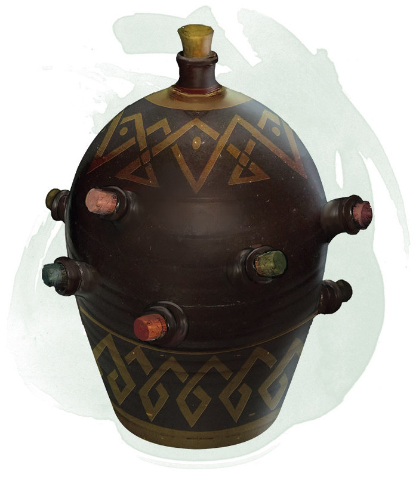

Cruche alchimique
[ Alchemy Jug ]
Objet merveilleux, peu commun
Cette cruche en céramique semble être en mesure de contenir 4 litres de liquide et pèse 6 kg, vide ou pleine. Des sons de ballonnements se font entendre de l'intérieur de la jarre quand elle est secouée, même si elle est vide.
Vous pouvez utiliser une action et nommer un liquide de la table ci-dessous, et la cruche se remplit du liquide choisi. Ensuite, vous pouvez déboucher la jarre au prix d'une action et déverser ce liquide, jusqu'à 8 litres par minute. La quantité de liquide que la jarre peut produire dépend du liquide nommé.
Une fois que la jarre a commencé à produire un liquide, elle ne peut pas en produire un autre, ni plus que son maximum, jusqu'à l'aube suivante.
Vous pouvez utiliser une action et nommer un liquide de la table ci-dessous, et la cruche se remplit du liquide choisi. Ensuite, vous pouvez déboucher la jarre au prix d'une action et déverser ce liquide, jusqu'à 8 litres par minute. La quantité de liquide que la jarre peut produire dépend du liquide nommé.
Une fois que la jarre a commencé à produire un liquide, elle ne peut pas en produire un autre, ni plus que son maximum, jusqu'à l'aube suivante.
| Liquide | Quantité max |
|---|---|
| Acide | 25 cl |
| Bière | 16 l |
| Eau douce | 32 l |
| Eau salée | 48 l |
| Huile | 1 l |
| Miel | 4 l |
| Mayonnaise | 8 l |
| Poison simple | 15 ml |
| Vin | 4 l |
| Vinaigre | 8 l |
Dungeon Master´s Guide (BR)
